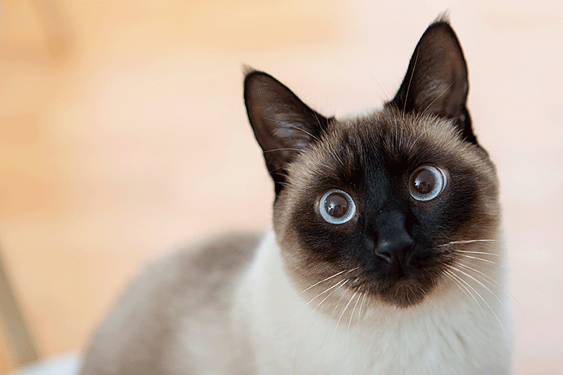

1. Persa e Himalaia

O gato Persa é, para muitos, sinônimo de gato de luxo. Com seu porte tranquilo, pelagem longa e
majestosa e focinho plano, o tornam “rei das exposições”.
Possui temperamento tranquilo e é amável, ótimo para pessoas que possuem outros pets, crianças ou que são donos
pela primeira vez de um felino.
O Persa adora dormir no colo e receber carinho!
Uma raça mais nova, a Himalaia, nasceu em 1950, quando cruzaram um gato Siamês com um Persa para criar um pet
que tivesse corpo do Persa e a coloração do Siamês (olhos azuis e cores nas extremidades, denominado Persa
Colorpoint).
2. Siamês

A aparência de um gato Siamês é o que mais chama atenção: olhos bem azuis e pelos claros com
extremidades mais escuras (rosto, orelhas, patas e rabo). Com postura elegante, esta raça era comum em
companhias para reis na Tailândia.
Já o temperamento do gato Siamês pode ser imprevisível. Na maioria das vezes, são tranquilos, amáveis e fiéis,
mas algumas vezes, de repente, o comportamento muda, e eles podem ficar mais quietos e apáticos.São uma raça
independente e que precisa de socialização logo cedo, para não terem ciúmes de seus donos e se darem bem com
todas as pessoas próximas.
Se você tem um gato Siamês, lembre-se de tratá-lo com a alimentação adequada e específica.